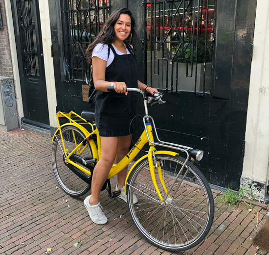

about me.
My journey as a designer began when I was stuck in a summer sales and trading job. Cranking out excel files and powerpoints sometimes overnight made me realize I wanted to work on more tangible products, where I could see my work being put to use and be able to more closely interact with my user or client. So, during my final year of undergrad I pivoted to UX Design and the rest is history!
As a designer, I'm really curious about user experiences that may not be well defined by the limits of the screen. I'm constantly pushing myself to think broadly about the definition of design and how it influences the user experience.
Currently, I'm a student at Carnegie Mellon pursuing my Masters in Human Computer Interaction and a research assistant for the Human and Robot Partners lab. This past summer, I interned at NASA AMES as a UX Designer, working on cool features for astronauts and learning about space exploration.
In my free time, you can find me learning new dance styles (check out my team that I started!), enjoying nature, or taking on the latest doodle challenge. Please feel free to reach out to me to collaborate or give any feedback at sjobanpu@cs.cmu.edu!
